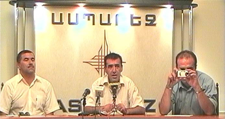
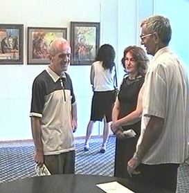

МИРОТВОРЧЕСКИЙ ДЕСАНТ В ГЮМРИ
Экспозиция картин молодых художников была в Клубе
журналистов «Аспарез», там же состоялся показ фильма и круглый
стол с участием представителей местных НПО и СМИ. В начале обсуждения
был задан ряд вопросов
о проекте, об истории
создания выставки
и фильма.
Далее разговор вошел
в русло
профессионального
интереса журналистов,
многие из которых
освещают обстановку
в Азербайджане.
Был поднят вопрос о явной антиармянской направленности газет «Эхо» и «Зеркало», которые, как оказалось, являются основными источниками, из которых армянские журналисты узнают об Азербайджане.
Рауф Раджабов подчеркнул, что русскоязычная пресса Азербайджана отнюдь не отражает общественное мнение, имеет узкий круг читателей в самом Азербайджане и в основном рассчитана на зарубежного читателя. Для того, чтобы получить реальную картину, надо читать азербайджаноязычную прессу, имеющую популярность в самом Азербайджане. Раджабов рекомедовал присутствующим более прислушиваться и пользоваться сайтом газеты «Реальный Азербайджан», которая, к счастью, не является инструментом агитации, и в пользу этой газеты говорит стремительный рост ее тиража.
Участники встречи, отметили, что если говорить о профессиональном подходе к информации, действительно можно игнорировать различные пропагандистские акции и дезинформацию. Но к сожалению, именно газеты «Эхо» и «Зеркало», статьи и выдержки из которых зачастую попадают в армянскую прессу, в течение последних лет формировали представления армянских граждан об отношении азербайджанского общества к армянам.
Журналисты воспользовались возможностью из первых рук восполнить информационный вакуум.
Вопрос: Каково положение с правами национальных меньшинств в Азербайджане – талышей, лезгин, русских и др?
Р. Раджабов: Я бы рассматривал эту проблему в другом ракурсе – в Азербайджане есть проблема отставания социально-экономического развития окраин от центра. А нацменьшинства у нас компактно проживают на юге (талыши) и на севере (лезгины). У нас недавно принят закон о развитии регионов, на мой взгляд, ожидаются положительные изменения в этой области.
Вопрос: Насколько преломляется урегулирование карабахской проблемы во внутриполитической борьбе в Азербайджане, в предвыборной борьбе?
Р. Раджабов: К счастью на сегодня значительно уменьшились спекуляции на этой проблеме, уже нельзя будет "въехать в парламент" на обещаниях решить этот вопрос. Сейчас в центре внутриполитических процессов – социально-экономические проблемы и построение правового государства.
Вопрос: Решены ли пограничные разногласия Грузии и Азербайджана?
Р. Раджабов: Этот вопрос обсуждается на экспертном уровне, и по официальным заявлениям решение будет принято в самое ближайшее время.
Вопрос: Насколько общество Азербайджана, гражданский сектор, неправительственные организации готовы подключиться к процессам урегулирования конфликта, есть ли этот ресурс в Азербайджане?
Р. Раджабов: То, что наше общество может и должно участвовать в параллельной, народной дипломатии – это однозначно. Неправительственным сектором Азербайджана уже проводятся встречи, обсуждения возможных путей преодоления конфликта и мы приглашаем на дискуссии также людей имеющих самые радикальные позиции. Мы озвучиваем наши взгляды и увеличиваем число сторонников диалога. Второй уровень этого процесса – диалог двух обществ. И в этой сфере есть большая потребность и надежда на активизацию.
Женщина из зала: Я очень впечатлена выставкой. И очень благодарна молодежи которая призывает нас к миру, они думают одинаково и ломают наши представления о том, что наши народы непримиримы.
После встречи с журналистами и НПО рабочая группа проекта побывала в Центре современного искусства г. Гюмри, где состоялась встреча с художниками и архитекторами. Обсуждалась важность нахождения новых участников миротворческого процесса, вовлечение в процесс деятелей искусства и интеллигенции.
Был поднят вопрос о явной антиармянской направленности газет «Эхо» и «Зеркало», которые, как оказалось, являются основными источниками, из которых армянские журналисты узнают об Азербайджане.
Рауф Раджабов подчеркнул, что русскоязычная пресса Азербайджана отнюдь не отражает общественное мнение, имеет узкий круг читателей в самом Азербайджане и в основном рассчитана на зарубежного читателя. Для того, чтобы получить реальную картину, надо читать азербайджаноязычную прессу, имеющую популярность в самом Азербайджане. Раджабов рекомедовал присутствующим более прислушиваться и пользоваться сайтом газеты «Реальный Азербайджан», которая, к счастью, не является инструментом агитации, и в пользу этой газеты говорит стремительный рост ее тиража.
Участники встречи, отметили, что если говорить о профессиональном подходе к информации, действительно можно игнорировать различные пропагандистские акции и дезинформацию. Но к сожалению, именно газеты «Эхо» и «Зеркало», статьи и выдержки из которых зачастую попадают в армянскую прессу, в течение последних лет формировали представления армянских граждан об отношении азербайджанского общества к армянам.
Журналисты воспользовались возможностью из первых рук восполнить информационный вакуум.
Вопрос: Каково положение с правами национальных меньшинств в Азербайджане – талышей, лезгин, русских и др?
Р. Раджабов: Я бы рассматривал эту проблему в другом ракурсе – в Азербайджане есть проблема отставания социально-экономического развития окраин от центра. А нацменьшинства у нас компактно проживают на юге (талыши) и на севере (лезгины). У нас недавно принят закон о развитии регионов, на мой взгляд, ожидаются положительные изменения в этой области.
Вопрос: Насколько преломляется урегулирование карабахской проблемы во внутриполитической борьбе в Азербайджане, в предвыборной борьбе?
Р. Раджабов: К счастью на сегодня значительно уменьшились спекуляции на этой проблеме, уже нельзя будет "въехать в парламент" на обещаниях решить этот вопрос. Сейчас в центре внутриполитических процессов – социально-экономические проблемы и построение правового государства.
Вопрос: Решены ли пограничные разногласия Грузии и Азербайджана?
Р. Раджабов: Этот вопрос обсуждается на экспертном уровне, и по официальным заявлениям решение будет принято в самое ближайшее время.
Вопрос: Насколько общество Азербайджана, гражданский сектор, неправительственные организации готовы подключиться к процессам урегулирования конфликта, есть ли этот ресурс в Азербайджане?
Р. Раджабов: То, что наше общество может и должно участвовать в параллельной, народной дипломатии – это однозначно. Неправительственным сектором Азербайджана уже проводятся встречи, обсуждения возможных путей преодоления конфликта и мы приглашаем на дискуссии также людей имеющих самые радикальные позиции. Мы озвучиваем наши взгляды и увеличиваем число сторонников диалога. Второй уровень этого процесса – диалог двух обществ. И в этой сфере есть большая потребность и надежда на активизацию.
Женщина из зала: Я очень впечатлена выставкой. И очень благодарна молодежи которая призывает нас к миру, они думают одинаково и ломают наши представления о том, что наши народы непримиримы.
После встречи с журналистами и НПО рабочая группа проекта побывала в Центре современного искусства г. Гюмри, где состоялась встреча с художниками и архитекторами. Обсуждалась важность нахождения новых участников миротворческого процесса, вовлечение в процесс деятелей искусства и интеллигенции.
Регион Ширак
31 июля - 1 августа, 2005
Кавказский Центр Миротворческих Инициатив
при поддержке Южнокавказского офиса фонда Генриха Белла
31 июля - 1 августа, 2005
Кавказский Центр Миротворческих Инициатив
при поддержке Южнокавказского офиса фонда Генриха Белла
